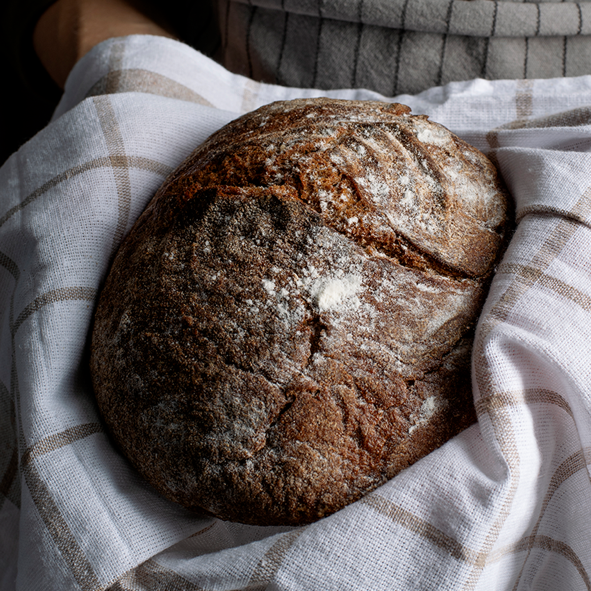

What We Bake
Click “Add to Favorites” on any item. Your list is saved in this browser so you can come back later and still see your picks.
Your Favorites
No favorites yet. Add a few items below!


Click “Add to Favorites” on any item. Your list is saved in this browser so you can come back later and still see your picks.
No favorites yet. Add a few items below!
